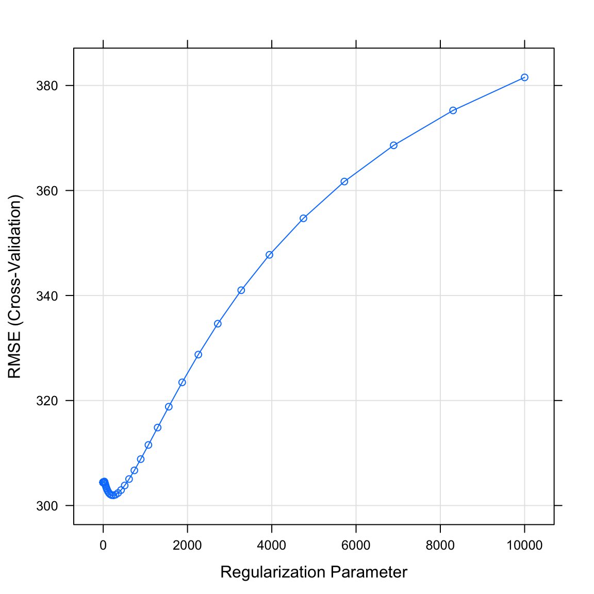
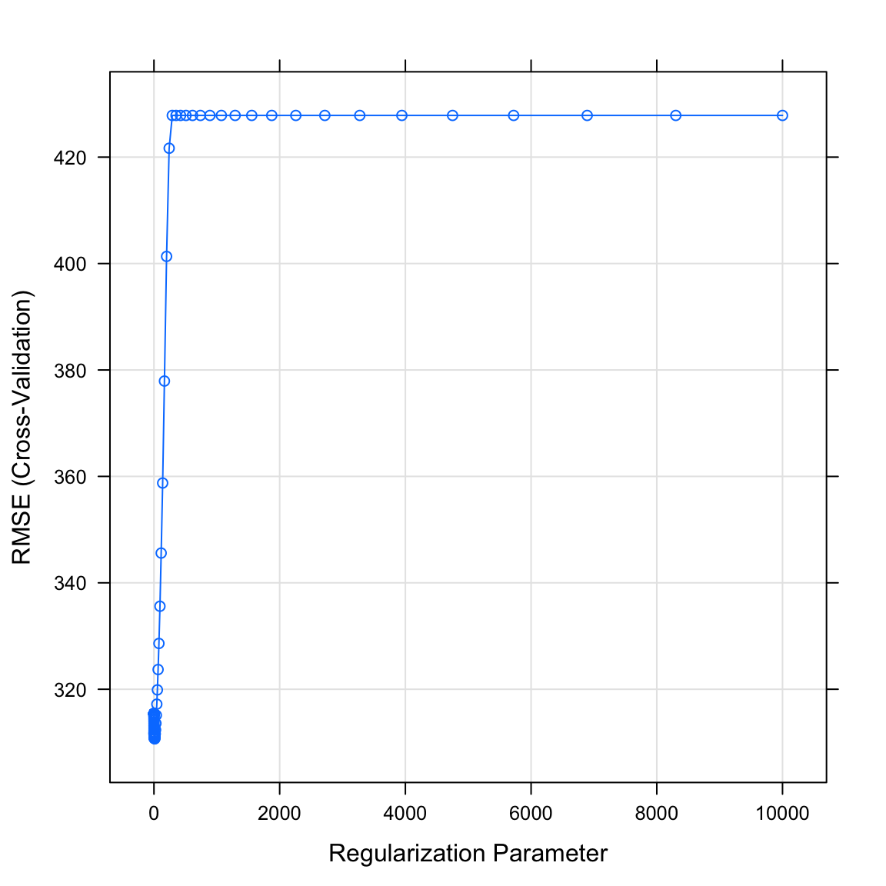
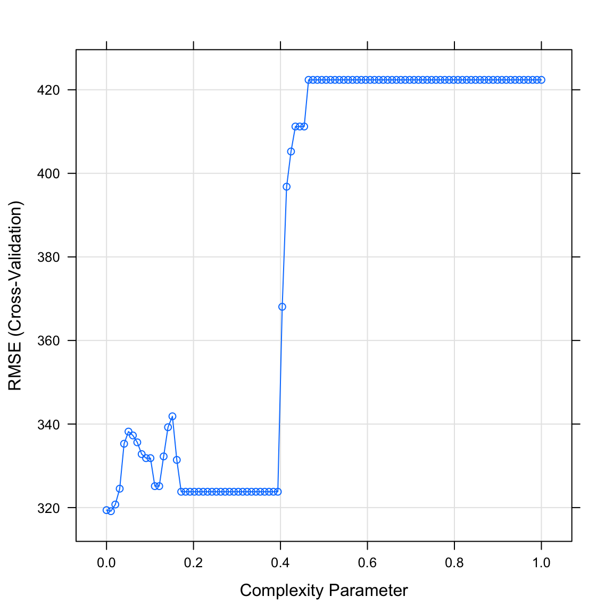
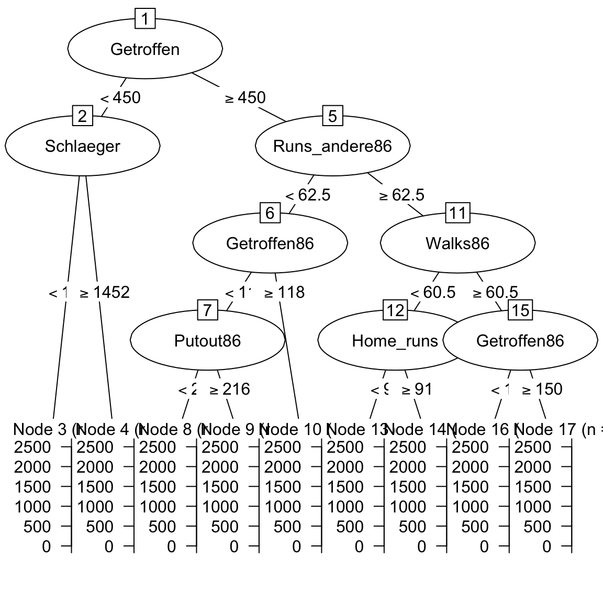
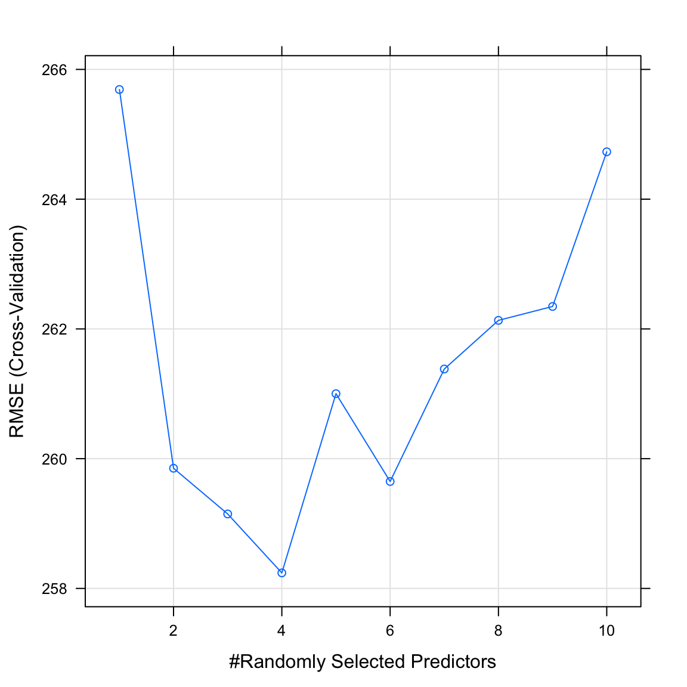

Optimizing
|
Maschinelles Lernen mit R The R Bootcamp |

|

from xkcd.com
Überblick
In diesem Practical wirst du optimale Tuning Parameter identifizieren für eine bestmögliche Vorhersageperformanz.
Am Ende des Practicals wirst du wissen wie man…
- Cross-Validation zur Auswahl der Tuning Parameter verwendet.
- Wie sich eine simple Regression von Lasso und Ridge unterscheidet.
Aufgaben
A - Setup
Öffne dein
TheRBootcampR project.Öffne ein neues R Skript. Schreibe deinen Namen, das Datum und “Optimizing Practical” als Kommentare an den Anfang des Skripts.
## NAME
## DATUM
## Optimizing PracticalSpeichere das neue Skript unter dem Namen
optimizing_practical.Rim2_CodeOrdner.Lade die Pakete
tidyverse,caret,party,partykit.
library(tidyverse)
library(caret)
library(party)
library(partykit)B - Lade die baseball Datensätze
- Verwende die
read_csv()Funktion um die Datensätzebaseball_train.csvundbaseball_test.csveinzulesen.
# Lese Daten ein
baseball_train <- read_csv(file = "1_Data/baseball_train.csv")
baseball_test <- read_csv(file = "1_Data/baseball_test.csv")Printe die Datensätze.
Verwende
names(XX),summary(XX), undView(XX)um einen weiteren Überblick über die Daten zu bekommen.Wiederum, führe den Code unten aus um sicherzustellen, dass alle
characterFeatures als Faktoren vorliegen.
# Konvertiere alle character zu factor
baseball_train <- baseball_train %>%
mutate_if(is.character, factor)
baseball_test <- baseball_test %>%
mutate_if(is.character, factor)C - Definiere trainControl
- Definiere ein Objekt
ctrl_cvdas 10-fold Cross-Validation als Resampling Methode bestimmt. Im Detail,…
- setze das
methodArgument auf"cv"für Cross-Validation. - setze das
numberArgument auf10für 10 folds.
# Verwende 10-fold Cross-Validation
ctrl_cv <- trainControl(method = "XX",
number = XX) # Verwende 10-fold Cross-Validation
ctrl_cv <- trainControl(method = "cv",
number = 10) C - Regression
- Fitte eine normale Regression auf bekanntem Wege (z.B. wie im Practical zu Prediction), die das
Gehaltdes Baseballspielers durch alle Features im Datensatz vorhersagt. Einziger Unterschied: Setze dastrControlArgument auf das eben definiertectrl_cvObjekt.
# Normal Regression
gehalt_glm <- train(form = XX ~ .,
data = XX,
method = "XX",
trControl = XX)# Normal Regression
gehalt_glm <- train(form = Gehalt ~ .,
data = baseball_train,
method = "glm",
trControl = ctrl_cv)- Exploriere
gehalt_glmindem dugehalt_glm$finalModelprintest undsummary()auf das Fit-Objekt anwendest. Wie beurteilst du die Outputs?
gehalt_glmGeneralized Linear Model
213 samples
19 predictor
No pre-processing
Resampling: Cross-Validated (10 fold)
Summary of sample sizes: 192, 191, 191, 192, 191, 192, ...
Resampling results:
RMSE Rsquared MAE
312 0.528 229D - Ridge Regression
- Bevor du ein Regressionsmodel mit Ridge fitten kannst, benötigst du das Kandidatenset für die Tuning Parameter. Erstelle hierzu mit dem Code einen Vector von möglichen
lambdaWerten.
# Kandidaten für lambda
lambda_vec <- 10 ^ (seq(-4, 4, length = 100))- Fitte eine Ridge Regression, die das
Gehaltdes Baseballspielers durch alle Feature im Datensatz vorhersagt. Hierzu kannst du mit dem Code der normalen Regression beginnen und anschliessend zwei Änderungen vornehmen:
- setze das
preProcessArgument aufc("center", "scale")um möglichen Problemen mit unterschielichen Skalierungen aus dem Weg zu gehen, die bei Regularisierung auftreten können. - setze das
tuneGridaufexpand.grid(alpha = 0, lambda = lambda_vec)um Ridge auszuwählen und alle verschiedenen Kandidaten inlambda_vecdurchlaufen zu lassen.
# Ridge Regression
gehalt_ridge <- train(form = XX ~ .,
data = XX,
method = "XX",
trControl = XX,
preProcess = XX,
tuneGrid = XX)# Ridge Regression
gehalt_ridge <- train(form = Gehalt ~ .,
data = baseball_train,
method = "glmnet",
trControl = ctrl_cv,
preProcess = c("center", "scale"),
tuneGrid = expand.grid(alpha = 0,
lambda = lambda_vec))- Plotte das Objekt
gehalt_ridgemitplot(). Was verrät dir der Plot? WelcherlambdaWert könnte optimal sein?
plot(gehalt_ridge)
- Printe mit dem Code unten den durch die Cross-Validation als bestes
lambdaidentifizierten Wert. Passt er zum Plot in der letzten Aufgabe?
# Printe besten lambda parameter
gehalt_ridge$bestTune$lambda[1] 242- Lasse dir mit dem Code unten die Parameter des finale Modells anzeigen. Wie beurteilst du den Output?
# Erhalte die Modellparameter für das Modell unter dem optimalen lambda
coef(gehalt_ridge$finalModel,
gehalt_ridge$bestTune$lambda)20 x 1 sparse Matrix of class "dgCMatrix"
1
(Intercept) 518.822
Schlaeger86 19.721
Getroffen86 50.952
Home_runs86 3.052
Runs86 30.331
Runs_andere86 20.753
Walks86 41.547
Putout86 55.907
Vorlage86 -16.550
Fehler86 -8.857
Erfahrung 9.199
Schlaeger 22.937
Getroffen 38.660
Home_runs 38.065
Runs 37.822
Runs_andere 40.529
Walks 5.158
LigaN -0.234
DivisionW -38.463
Liga87N 1.474E - Lasso Regression
- Fitte eine Lasso Regression, die das
Gehaltdes Baseballspielers durch alle Features im Datensatz vorhersagt. Beginne mit dem Code für die Ridge Regression und definiere als einzige Änderungalpha = 1.
# Fit a lasso regression
gehalt_lasso <- train(form = Gehalt ~ .,
data = baseball_train,
method = "glmnet",
trControl = ctrl_cv,
preProcess = c("center", "scale"),
tuneGrid = expand.grid(alpha = 1, # Lasso penalty
lambda = lambda_vec))- Plotte das Objekt
gehalt_lassomitplot(). Was verrät dir der Plot? WelcherlambdaWert könnte optimal sein?
plot(gehalt_lasso)
- Printe mit dem Code unten den durch die Cross-Validation als bestes
lambdaidentifizierten Wert. Passt er zum Plot in der letzten Aufgabe?
# Printe besten lambda Parameter
gehalt_lasso$bestTune$lambda[1] 12.3- Lasse dir mit dem Code unten die Parameter des finalen Modells anzeigen. Wie beurteilst du den Output? Hat sich was im Vergleich zu Ridge verändert?
# Erhalte die Modellparameter für das Modell unter dem optimalen lambda
coef(gehalt_lasso$finalModel,
gehalt_lasso$bestTune$lambda)20 x 1 sparse Matrix of class "dgCMatrix"
1
(Intercept) 518.8
Schlaeger86 .
Getroffen86 116.5
Home_runs86 .
Runs86 .
Runs_andere86 .
Walks86 49.8
Putout86 70.2
Vorlage86 -24.5
Fehler86 .
Erfahrung .
Schlaeger .
Getroffen .
Home_runs 25.3
Runs 71.8
Runs_andere 102.2
Walks .
LigaN .
DivisionW -47.1
Liga87N . F - Decision Tree
- Bevor du einen Decision Tree per Cross-Validation fittest, benötigst du das Kandidatenset für die Tuning Parameter. Erstelle hierzu mit dem Code einen Vektor von möglichen
cpWerten.
# Kandidaten für cp
cp_vec <- seq(from = 0, to = 1, length = 100)- Fitte einen Decision Tree, der das
Gehaltdes Baseballspielers durch alle Features im Datensatz vorhersagt. Beginne mit dem bekannten Code und zusätzlich…
- setze das
trControlArgument auf dasctrl_cvObjekt. - setze das
tuneGridArgument aufexpand.grid(cp = cp_vec).
# Decision Tree
gehalt_rpart <- train(form = XX ~ .,
data = XX,
method = "XX",
trControl = XX,
tuneGrid = XX)# Decision Tree
gehalt_rpart <- train(form = Gehalt ~ .,
data = baseball_train,
method = "rpart",
trControl = ctrl_cv,
tuneGrid = expand.grid(cp = cp_vec))- Plotte das Objekt
gehalt_rpartmitplot(). Was verrät dir der Plot? WelchercpWert könnte optimal sein?
plot(gehalt_rpart)
- Printe mit dem Code unten den durch die Cross-Validation als besten
cpidentifizierten Wert. Passt er zum Plot in der letzten Aufgabe?
# Print besten cp Parameter
gehalt_rpart$bestTune$cp[1] 0.0101- Plotte das finale Modell mit dem folgenden Code.
# Visualisiere den Decision Tree
plot(as.party(gehalt_rpart$finalModel)) 
G - Random Forests
- Bevor du einen Random Forest per Cross-Validation fittest, benötigst du das Kandidatenset für die Tuning Parameter. Erstelle hierzu mit dem Code einen Vektor von möglichen
mtryWerten.
# Kandidaten für mtry
mtry_vec <- 1:10- Fitte einen Random Forest, der das
Gehaltdes Baseballspielers durch alle Features im Datensatz vorhersagt. Beginne mit dem bekannten Code und zusätzlich…
- setze das
trControlArgument auf dasctrl_cvObjekt. - setze das
tuneGridArgument aufexpand.grid(mtry = mtry_vec).
# Random Forest
gehalt_rf <- train(form = XX ~ .,
data = XX,
method = "XX",
trControl = XX,
tuneGrid = XX)# Random Forest
gehalt_rf <- train(form = Gehalt ~ .,
data = baseball_train,
method = "rf",
trControl = ctrl_cv,
tuneGrid = expand.grid(mtry = mtry_vec))- Plotte das Objekt
gehalt_rfmitplot(). Was verrät dir der Plot? WelchemtryWerte könnten optimal sein?
plot(gehalt_rf)
- Printe mit dem Code unten den durch die Cross-Validation als bestes
mtryidentifizierten Wert. Passt er zum Plot in der letzten Aufgabe?
# Printe besten mtry Parameter
gehalt_rf$bestTune$mtry[1] 4H - Schätze die Vorhersageperformanz über Cross Validation
- Verwende
resamples()um die geschätzte Vorhersageleistung der einzelnen Modelle zu bestimmen. Übergebe hierzu die einzelnen gefitteten Modelle (z.b.,gehalt_glm) an die Funktion.
# Geschätzte Vorhersageleistung
gehalt_resamples <- resamples(list(glm = XXX,
ridge = XXX,
lasso = XXX,
rpart = XXX,
rf = XXX))# Geschätzte Vorhersageleistung
gehalt_resamples <- resamples(list(glm = gehalt_glm,
ridge = gehalt_ridge,
lasso = gehalt_lasso,
dt = gehalt_rpart,
rf = gehalt_rf))- Erhalte einen Überblick über die Ergennisse mit
summary(gehalt_resamples). Wie interpretierst du den Ouput? Welches Modell hat die beste geschätzte Vorhersageleistung?
I - Berechne tatsächliche Vorhersageleistung
- Speichere das Kriterium (
Gehalt) der Testdatenbaseball_testin einem Objekt namenscriterion_test.
# Testkriterium
criterion_test <- XXX$XXX# Geschätzte Vorhersageleistung
criterion_test <- baseball_test$Gehalt- Verwende
predict()um auf bekanntem Wege Vorhersagen für die Testdatenbaseball_testauf Basis der Modelle zu bestimmen.
# Vorhersagen der Modelle
ridge_pred <- predict(XXX, newdata = XXX)
lasso_pred <- predict(XXX, newdata = XXX)
rpart_pred <- predict(XXX, newdata = XXX)
rf_pred <- predict(XXX, newdata = XXX)# Vorhersagen der Modelle
ridge_pred <- predict(gehalt_ridge, newdata = baseball_test)
lasso_pred <- predict(gehalt_lasso, newdata = baseball_test)
rpart_pred <- predict(gehalt_rpart, newdata = baseball_test)
rf_pred <- predict(gehalt_rf, newdata = baseball_test)- Verwende
postResample()um die Vorhersagen mit den tatsächlichen Kriteriumswerten zu vergleichen. Welches Modell hat in der Vorhersage der Testdaten die beste Performanz?
postResample(ridge_pred, criterion_test) RMSE Rsquared MAE
445.415 0.254 258.965 postResample(lasso_pred, criterion_test) RMSE Rsquared MAE
446.113 0.256 262.016 postResample(rpart_pred, criterion_test) RMSE Rsquared MAE
496.719 0.248 292.957 postResample(rf_pred, criterion_test) RMSE Rsquared MAE
397.953 0.402 214.714 - Vergleiche die geschätzten Vorhersageleistungen auf Basis von
resamples()(aus der letzten Sektion) mit der Leistung für tatsächliche Vorhersage. Wie gross sind die Unterschiede?
X - Challenges: Abschlussrate
Vergleiche auf Basis der Schritte in diesem Practical die Performanz von Regression, Lasso, Ridge, Decision Tree und Random Forest für die graduation_train und graduation_test Datensätze aus dem letzten Practical. Lass die Modelle das Kriterium Privatuniversität auf Basis aller anderen Features vorhersagen. Nicht vergessen für Klassifikation muss das Kriterium ein factor sein.
- Welches Modell ist das beste?
- Wie viel besser werden die Modelle durch Model Tuning? Vergleiche mit den Ergebnissen des letzten Practicals.
- Setzt Lasso die Gewichte einzelner Features auf 0? Was könnte das für die Relevanz des Features bedeuten?
Y - Challenges: Hauspreise
Vergleiche auf Basis der Schritte in diesem Practical die Performanz von Regression, Lasso, Ridge, Decision Tree und Random Forest für die house_train und house_test Datensätze aus dem letzten Practical. Lass die Modelle das Kriterium Preis auf Basis aller anderen Features vorhersagen.
- Welches Modell ist das beste?
- Wie viel besser werden die Modelle durch Model Tuning? Vergleiche mit den Ergebnissen des letzten Practicals.
- Setzt Lasso die Gewichte einzelner Features auf 0? Was könnte das für die Relevanz des Features bedeuten?
Beispiele
# Schritt 0: Lade Pakete-----------
library(tidyverse)
library(caret)
library(partykit)
library(party)
# Step 1: Lade und bereite Daten ----------------------
# Training und Testdaten
data_train <- read_csv("1_Data/diamonds_train.csv")
data_test <- read_csv("1_Data/diamonds_test.csv")
# Konvertiere alle character zu factor
data_train <- data_train %>% mutate_if(is.character, factor)
data_test <- data_test %>% mutate_if(is.character, factor)
# Definiere Kriterien
criterion_train <- data_train$price
criterion_test <- data_test$price
# Schritt 2: Definiere die Training-Kontrollparameter -------------
# Verwende 10-fold Cross Validation
ctrl_cv <- trainControl(method = "cv",
number = 10)
# Scrhitt 3: Trainieree Modelle -----------------------------
# Simple Regression ----
price_glm <- train(form = price ~ carat + depth + table + x + y,
data = data_train,
method = "glm",
trControl = ctrl_cv)
# Zeige Outputs
price_glm
coef(price_glm$finalModel)
# Lasso ----
# Kandidatenset für lambda
lambda_vec <- 10 ^ seq(-3, 3, length = 100)
# Lasso Regression
price_lasso <- train(form = price ~ carat + depth + table + x + y,
data = data_train,
method = "glmnet",
trControl = ctrl_cv,
preProcess = c("center", "scale"), # Standardisiere
tuneGrid = expand.grid(alpha = 1,
lambda = lambda_vec))
# Zeige Outputs
price_lasso
plot(price_lasso)
# Zeige beste Regularisierungsparameter
price_lasso$bestTune$lambda
# Zeige finales Modell
coef(price_lasso$finalModel,
price_lasso$bestTune$lambda)
# Ridge ----
# Kandidatenset für lambda
lambda_vec <- 10 ^ seq(-3, 3, length = 100)
# Ridge Regression
price_ridge <- train(form = price ~ carat + depth + table + x + y,
data = data_train,
method = "glmnet",
trControl = ctrl_cv,
preProcess = c("center", "scale"), # Standardisiere
tuneGrid = expand.grid(alpha = 0,
lambda = lambda_vec))
# Zeige Outputs
price_ridge
plot(price_ridge)
# Zeige beste Regularisierungsparameter
price_ridge$bestTune$lambda
# Zeige finales Modell
coef(price_ridge$finalModel,
price_ridge$bestTune$lambda)
# Decision Trees --------------------------
# Kandidatenset für cp
cp_vec <- seq(0, .1, length = 100)
price_rpart <- train(form = price ~ carat + depth + table + x + y,
data = data_train,
method = "rpart",
trControl = ctrl_cv,
tuneGrid = expand.grid(cp = cp_vec))
# Zeige Outputs
price_rpart
# Zeige beste Regularisierungsparameter
plot(price_rpart)
price_rpart$bestTune$cp
# Schritt 3: Vorhersageperformanz in folds ----
# Berechne Performanz
resamples_price <- resamples(list(ridge = price_ridge,
lasso = price_lasso,
glm = price_glm))
# Zusammenfassung
summary(resamples_price)
# Schritt 4: Vorhersageevaluation -------------------
# GLM
glm_pred <- predict(price_glm, newdata = data_test)
postResample(pred = glm_pred, obs = criterion_test)
# Ridge
ridge_pred <- predict(price_ridge, newdata = data_test)
postResample(pred = ridge_pred, obs = criterion_test)
# Lasso
lasso_pred <- predict(price_lasso, newdata = data_test)
postResample(pred = lasso_pred, obs = criterion_test)Datensätze
| Datei | Zeilen | Spalten |
|---|---|---|
| baseball_train.csv | 213 | 20 |
| baseball_test.csv | 50 | 20 |
| graduation_train.csv | 500 | 18 |
| graduation_test.csv | 277 | 18 |
| house_train.csv | 5000 | 21 |
| house_test.csv | 1000 | 21 |
baseball_train and baseball_test
Die baseball_train und baseball_test Datensätze entstammen dem Hitters Datensatz des ISLR Pakets. Sie enthalten Daten über Major League Baseball Spieler aus den Saisons 1986 und 1987.
|Gehalt| Jahresgehalt zu Beginn des Jahres 1987 | |Schlaeger86| Einsätze als Schläger im Jahr 1986 | |Getroffen86| Treffer des Balls im Jahr 1986 | |Home_runs86| Home runs im Jahr 1986 | |Runs86| Runs im Jahr 1986 | |Runs_andere86| Runs anderer ermöglicht im Jahr 1986 | |Walks86| Walks durch Fehlwürfe des Werfers im Jahr 1986 | |Putout86| Putouts eines Schlägers als Fänger im 1986 | |Vorlage86| Vorlage zum Putout als Fänger im Jahr 1986 | |Fehler86| Fehler der Fänger im Jahr 1986 | |Erfahrung| Erfahrung in Jahren in Major Ligen zu Beginn des Jahres 1987 | |Schlaeger| Einsätze als Schläger insgesamt | |Getroffen| Treffer des Balls insgesamt | |Home_runs| Home runs insgesamt | |Runs| Runs insgesamt | |Runs_andere| Runs anderer ermöglicht insgesamt | |Walks| Walks durch Fehlwürfe des Werfers insgesamt | |Liga| Ligakürzel: A = American, N = National | |Division| Divisionskürzel: E = East, W = West | |Liga87| Ligakürzel in 1987: A = American, N = National |
graduation_train und graduation_test
Die graduation_train und graduation_test Datensätze entstammen dem College Datensatz aus dem ISLR Paket. sie enthalten Statistiken für eine grosse Anzahl US Colleges auf Basis des US News and World Reports aus dem Jahr 1995.
| Name | Beschreibung |
|---|---|
| Privatuniversitaet | Ja oder Nein |
| Bewerbungen | Anzahl Bewerbungen |
| Angenommen | Anzahl angenommene Bewerbungen |
| Eingeschrieben | Anzahl eingeschrieben |
| Prozent_Top10 | Prozent der Studierenden innerhalb Top 10% in High School |
| Prozent_Top25 | Prozent der Studierenden innerhalb Top 25% in High School |
| Vollzeit | Anzahl Studierende in Vollzeit |
| Teilzeit | Anzahl Studierende in Teilzeit |
| Kosten_ausserhalb | Kosten für Studierende aus einem anderen Staat |
| Kosten_Unterkunft | Kosten für Studierende für Unterkunft und Verpflegung |
| Kosten_Buecher | Kosten für Studierende für Bücher |
| Kosten_persoenlich | Kosten für Studierende für Persönliches |
| Prozent_PhD | Anteil PhDs innerhalb der Dozentenschaft |
| Prozent_Degree | Anteil Abschlüsse innerhalb der Dozentenschaft |
| Verhaeltnis_Stud.Doz. | Verhältnis Studierene zu Dozenten |
| Prozent_Spenden | Anteil Alumnis, die an das College spenden |
| Kosten_Student | Ausbildungskosten für das College pro Student |
| Abschlussrate | Abschlussrate |
house_train and house_test
Die house_train und house_test Datensätze enthalten Hauspreise und -Eigenschaften in der King County in den USA, welches die Stadt Seattle beinhaltet. Quelle der Daten ist Kaggle.
| Name | Beschreibung |
|---|---|
| Preis | Preis des Hauses |
| Schlafzimmer | Anzahl Schlafzimmer |
| Baeder | Anzahl Bäder |
| Gesamt_sqft | Gesamtfläche des Hauses in square foot |
| Grundstück_sqft | Fläche des Grundstücks in square foot |
| Stockwerke | Anzahl Stockwerke |
| Uferlage | 0 = Nein, 1 = Ja |
| Besichtigung | Wurde das Haus besichtigt |
| Zustand | Wie gut ist der Zustand des Hauses |
| Einstufung | Einstufung gemäss King County Einstufungssystem |
| Wohnraum_sqft | Wohnraum des Hauses in square foot |
| Keller_sqft | Kellerraum des Hauses in square foot |
| Baujahr | Baujahr |
| Renovationsjahr | Renovationsjahr |
| Postleitzahl | Postleitzahl |
| Breitengrad | Breitengrad |
| Laengengrad | Längengrad |
| Gesamt_sqft_2015 | Gesamtfläche des Hauses in square foot in 2015 |
| Grundstück_sqft_2015 | Fläche des Grundstücks in square foot in 2015 |
Funktionen
Pakete
| Paket | Installation |
|---|---|
tidyverse |
install.packages("tidyverse") |
caret |
install.packages("caret") |
partykit |
install.packages("partykit") |
party |
install.packages("party") |
Funktionen
| Funktion | Paket | Beschreibung |
|---|---|---|
trainControl() |
caret |
Definiere wie das Modell trainiert wird |
train() |
caret |
Trainiere (fitte) ein Modell |
predict(object, newdata) |
stats |
Vorhersage des Kriteriumswerts in newdata |
postResample() |
caret |
Evaluiere Performanz in Regressionsfällen |
confusionMatrix() |
caret |
Evaluiere Performanz in Klassifikationsfällen |
Materialien
from github.com/rstudio